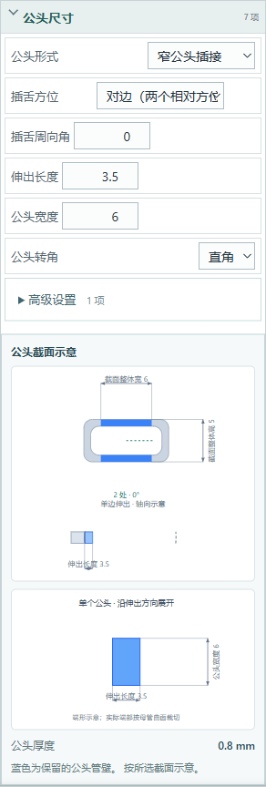
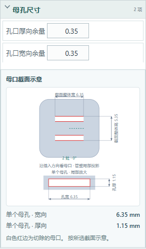
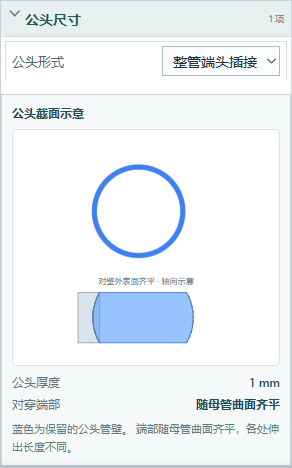
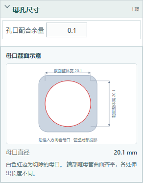

2026-10-28 · 极简防护网模板 2.3.1。此界面已纳入正式 Release 0.3.3。
创建极简防护网后，在右侧“装配”中依次设置“连接方式”“公头尺寸”“母孔尺寸”。公头尺寸下选择窄公头或整管端头；窄公头可设置伸出长度、宽度和端角。母孔尺寸下调整配合余量，界面直接显示对应单孔的尺寸。
蓝色表示保留的公头，白色红边表示切除的母孔。局部图随参数更新；点击图上的尺寸数字，可定位到对应输入。肩部余量收在高级设置中。
下图来自实际 Release 独立程序。公头宽 6 mm、宽向总余量 0.35 mm，单个母孔宽为 6.35 mm；本例所选公管壁厚为 0.8 mm、厚向总余量 0.35 mm，单孔厚向开口为 1.15 mm。这里的开口厚向尺寸与公头伸出长度 3.5 mm 是不同方向，局部图分别标明。


整管端头按所选管材完整截面配合。对穿连接自动延伸至母管对侧外表面；圆母管沿曲面修齐，各处伸出长度可能不同。界面显示曲面关系，不用一个固定长度替代整段端部。圆管或斜向插舌的孔口按曲线截面显示。


| 项目 | 结果 |
|---|---|
| 原生预览 | 16 组圆方管、单边／对穿、窄公头／整管组合通过；输入参数保持一致。 |
| Release 实际界面 | 两组实际模型及参数提交通过；最终版本实际切换管型后，选择框节点和监听器保留，局部读数更新。 |
| 浏览器交互 | 24 次专项编辑／管型选择通过；另有 30 次安装孔操作、288 种界面状态和 3360 项标注检查通过。焦点、选区、左右及嵌套滚动、输入和画布节点保持。 |
| 原有输入 | 保留 49 个物理输入，派生读数不进入保存的产品参数。 |
正式 0.3.3 安装包已包含本页界面：D:\penguinchinage0609\release\tubedesigner\20261028-v0.3.3\安装包\TubeDesigner-0.3.3-20261028-x64-Setup.exe。已完成 1007 个成品文件核对和解包后独立程序实操，详见0.3.3 发布说明。局部图是尺寸示意，生成后的零件用于检查实际加工形状。